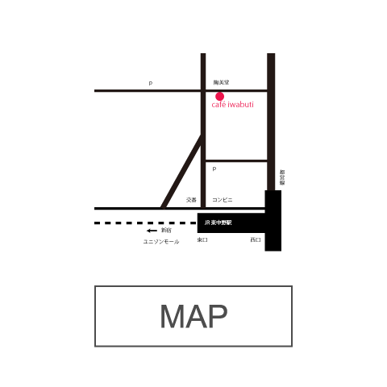

私たちは2013年3月4日に東中野にオープンしました。
お茶もお菓子もごはんもお酒も楽しんでいただけます。
気軽にお友だちのお家に来たような、そんなおいしいたのしいやさしい時間を過ごしていただければ、うれしいです。
夜10時まで営業しています。アルコールメニューも用意していますので、会社からの帰り道に「ちょっと一息」という方もお気軽にお立ち寄りください。

新宿からJR中央総武線で二駅の東中野駅。繁華街とは反対の東口を降り、どこか懐かしい香りのする、静かな街並みの中を３分程歩いたその先に、弊店はあります。
ホールケーキや焼き菓子の詰め合わせのご予約、店舗の貸し切りなどのご相談もお気軽にご連絡ください。